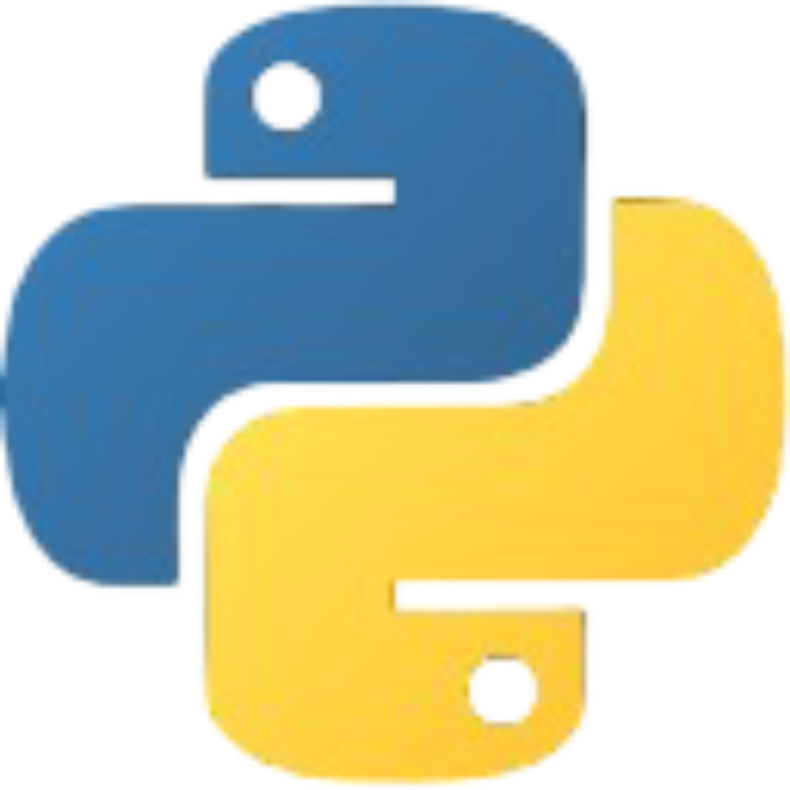

contact me:
If you'd like to get in touch for opportunities, collaboration, or questions, feel free to reach out:
Email: ordnfxist@gmail.com
WhatsApp: +27 79 185 9943
mthembeni
Owethu Eder
2007-06-13
>I love working on neural networks, LLMs and reading some Deep Learning or ML research papers, what excites me the most is the execution of the idea to code!
 Python
experimenting with small-scale language models (Bigram),HTML
CSS
JavaScript (DOM manipulation, events, basic logic)
These projects represent my hands-on journey in understanding Machine Learning systems from first principles — from manual optimization to building automated learning engines similar in spirit to PyTorch and micrograd.
A minimal linear regression model trained using manually written forward pass, loss calculation, and parameter updates. This project demonstrates my understanding of:
View on GitHub → tinyLinearModel (manual)
An extension of the linear model where the training logic is abstracted away from the model itself. The model only defines what to compute, while the engine handles learning.
View on GitHub → autoLinearModel (uses Autograd)
A foundational automatic differentiation-style system that centralizes gradient computation and parameter updates. This project is inspired by frameworks like micrograd and PyTorch, but implemented from scratch to deeply understand:
View on GitHub → Autograd (engine)
These projects form the foundation for my next steps: character-level language models, neural networks, and transformer-based systems.
If you'd like to get in touch for opportunities, collaboration, or questions, feel free to reach out:
Email: ordnfxist@gmail.com
WhatsApp: +27 79 185 9943